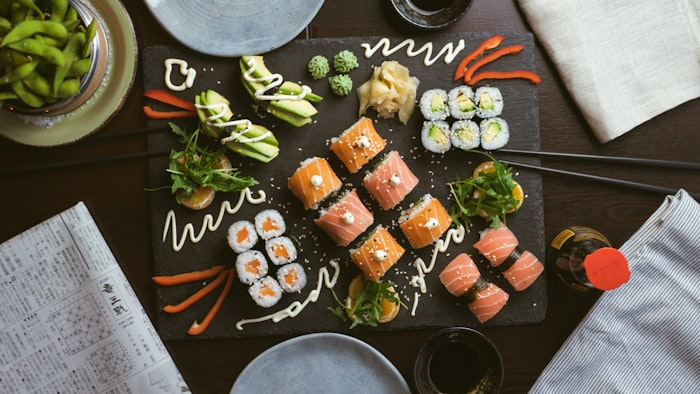
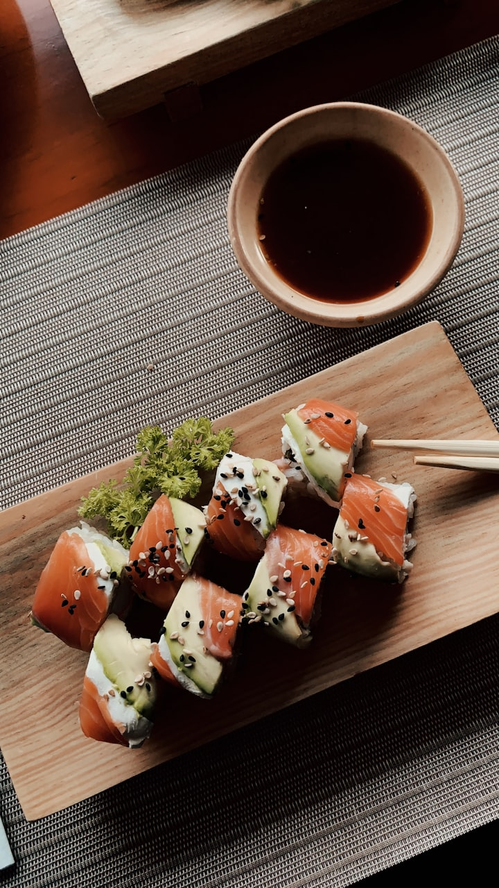
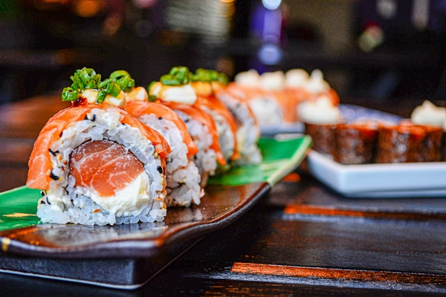

OMAKASE · 江戶前壽司
一口入魂，邂逅正統江戶前壽司的極致之美
— 匠人三十年心血，只為這一瞬的鮮甜 —
由東京銀座修業三十二年的主廚安田孝明親自掌店，嚴選當日空運直送漁獲，以最純粹的技藝，呈獻每一貫壽司的生命力。
立即預約
每日限定 30 席
VALUE PROPOSITION
為什麼松鶴與眾不同
我們相信，真正的壽司不需要過多修飾。來自三陸的牡蠣、北海道的海膽、長崎縣的鮪魚大腹，每一種食材都有它最完美的溫度與節奏。安田主廚用雙手，為每位客人量身打造屬於今日的 Omakase 旅程。
FEATURES
饗宴亮點
🍣
全程 Omakase
主廚依當季漁獲，規劃 18 貫套餐
🍶
手選清酒搭配
侍酒師為每道菜，推薦最匹配日本地酒
🌿
無菜單主義
每日食材不同，每次都是全新體驗
🏮
包廂席位
2 間獨立包廂，適合商務或紀念日
✈️
空運直送
每日凌晨直送食材，午間即可到店處理

EXPERIENCE
用餐體驗
踏入松鶴，檜木吧台的香氣迎面而來。客人以舒適的距離坐在主廚正前方，近距離欣賞每一貫壽司的誕生過程。用餐時長約 90 分鐘，節奏從容，如同一場小型表演。
GALLERY
視覺饗宴

極選壽司盛合せ

本日食材展示台

獨立包廂空間

當季漁獲珍饌
TESTIMONIALS
饕客留言
"
吃過米其林二星，但這裡的主廚精神更令我感動，每一貫都像是在說一個故事。
"
訂位難到懷疑人生，但每次吃完都覺得值得等一個月。
PROCESS
預約流程
01
填寫預約表單
官網選擇日期、時段與人數
02
客服確認
24 小時內收到確認簡訊與用餐須知
03
到店入座
提前 10 分鐘抵達，即刻感受松鶴氛圍
04
用餐後紀念
可加購主廚親簽食材卡作為紀念